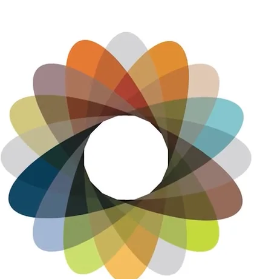

Data Analytics Intern · Global Experienced Specialists (GES)
At GES, the job was less about running queries and more about making messy operational data trustworthy enough for leadership to act on.
Data Cleanup
Identified and removed duplicate client records with advanced SQL, tightening the datasets senior leadership reported from.
Systems Mapping
Designed integration architecture diagrams across 50+ internal and external systems to expose hidden data dependencies.
Automation
Built a cloud-run Twitter API pipeline in Python, collecting 100+ records per run for analytics-ready ingestion.